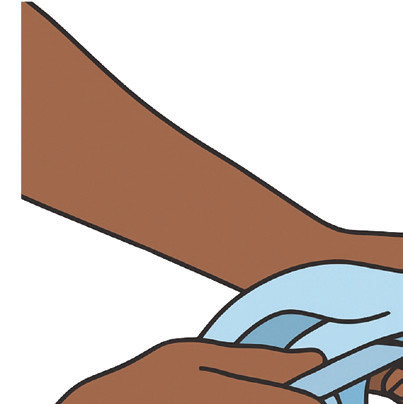

Charging objects
A neutral object has the same number of positive and negative charges, so they balance each other out. When you bring another neutral object close to it or touch them together, nothing special usually happens because both objects have balanced charges.
However, if something causes one of the objects to have more positive or negative charges than the other, this is called an imbalance of charges. Creating this imbalance is known as charging an object.
There are different ways to charge objects:
- (a) Friction: Rubbing two objects together can move electrons from one object to another.
- (b) Contact (or conduction): Touching a charged object to a neutral object can transfer electrons.
- (c) Induction: Bringing a charged object close to a neutral object can rearrange the charges inside the neutral object, even without touching.
These methods all involve moving electrons to create an imbalance of charges, which makes the object either positively or negatively charged.
Charging by friction
Charging by friction is the oldest method of generating electric charge, and it plays a fundamental role in understanding static electricity. This process occurs when two objects in contact are rubbed against each other, leading to the transfer of electrons from one object to another.
Mechanism of charging by friction
When two insulating materials are rubbed together, friction generates an imbalance of electric charges. Electrons, which are negatively charged particles, are transferred from one object to another. The object that loses electrons becomes positively charged, while the object that gains electrons becomes negatively charged. This transfer of charge is governed by the principle of conservation of charge, meaning that the total charge before and after the rubbing process remains constant. For example, when an ebonite rod is rubbed with fur, electrons move from the fur to the ebonite rod as shown in Figure 1.10. As a result, the fur becomes positively charged (due to the loss of electrons), while the ebonite rod becomes negatively charged (due to the gain of electrons).

Every day examples of charging by friction
- 1. Combing hair: When you comb your hair with a plastic comb, electrons are transferred from your hair to the comb. This causes the comb to become negatively charged, allowing